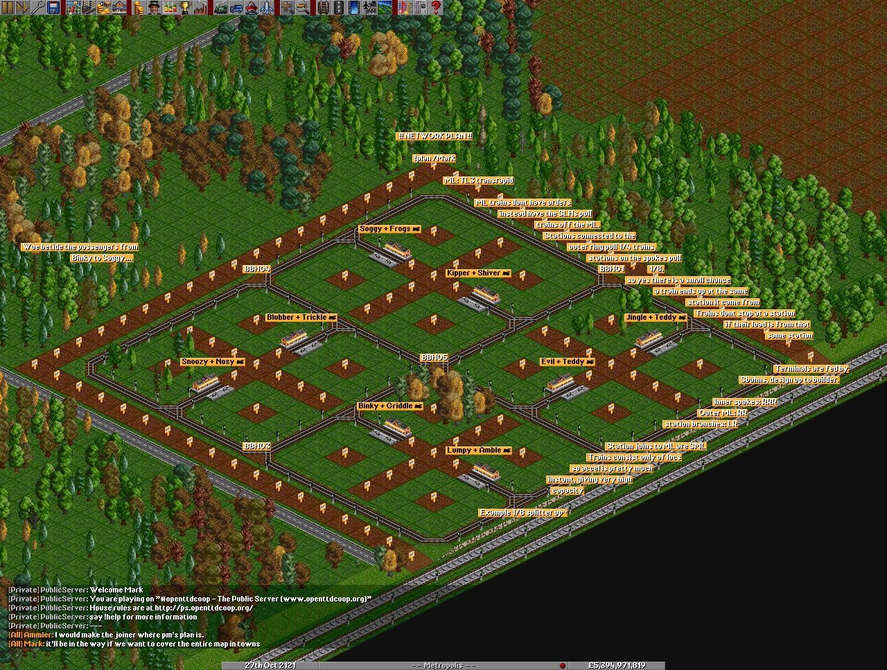
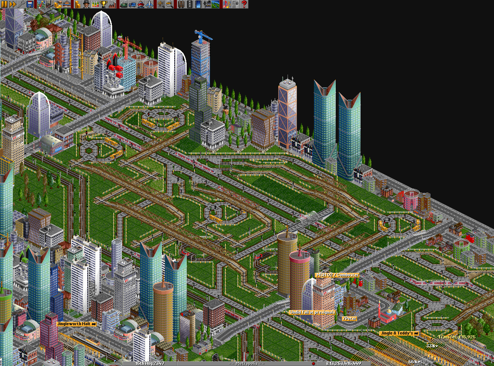

Stochastic Networks
You will probably have seen, or participated, in the last Public server game, which was all about logic. I’ll try to explain it in a bit.
After recent interests in self-regulating construction, there was an attempt to improve the usability of such designs. We have already seen self-regulating networks, where dummy trains transfer cargo onto ML trains, and recently self-regulating orders where vehicles could potentially go to all stations. What has not yet been done is to apply a form of regulation to point-to-point passenger games.
The main idea behind the concept is to have trains arbitrarily choose a station to drop their next load. While one could put each possible pair of stations into an order list, you would have to maintain the 240 possible pairs for 16 stations, making it a big hassle. However, if you force trains in a certain direction by the network, you can keep everything more manageable. So if you can force a certain selection of trains in one direction, you are set.


The plan for PSG #157
In PSG #157, the idea was put to the test. The plan basically consisted of four flattened rings, where trains would be able to change on the shared parts. At three of the hubs, trains would have a choice of turning right or left. Using logic, trains were forced either left or right in turn. The two smaller hubs used flip-flops to do perfectly cut the train flow in half for each outer part. Due to the size of a flip-flop, the central hub was built using a timer. This timer forced all trains to the left for a few seconds, then right for the next few seconds, which again resulted in the stream being effectively cut in half.
Stations would need a much lower ratio – if they would get a 50/50 share, the chance was very likely that the train would drop the load at the next stop, and the chance of reaching the other end of the network would be minimal. Instead each station was given 1/8th of the traffic, which gave a good distribution without having the trains spending an eternity on the line. Due to traffic being halved, the outer hubs would take 1/4 trains each.


Station hub 2, where you can see the 1/4 selector
To pick one out of four or eight trains accurately, a mechanism was needed. The most used system consisted of a not gate (the MagLev loops at the top) which would allow the train in the counter (erail loops in the bottom) to move ahead one signal for each train. The loop had 4 signals, and thus four segments. By tapping into one of the segments, we could get a signal for every fourth train. The remaining pair of not gates (MagLev loops in the center) were used to always have one red signal and one green signal, so that trains couldn’t have second thoughts and still go the wrong way.
You can have a look at the game in the PublicServer Archive
As a special feature, there were new logic trains available. Going at supersonic speeds, they allowed the user to create extremely fast responding logic systems, and made completing the plan a lot easier. You can find them in OpenTTD’s online content section.
Categories: Public Server
Petert September 6, 2009 15:24
Great post on an interesting game.
DCritic September 26, 2009 05:22
Nice train selector… never thought of that, of course :p